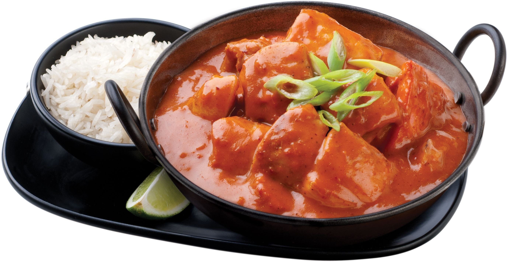

New York Times' Butter Chicken

Rich, glossy, effortless creaminess that is a sure crowd-pleaser
Ingredients
- 3 tablespoons vegetable oil
- 1 medium yellow onion, diced
- 3 cloves garlic, finely chopped
- 3 tablespoons grated ginger
- 1 tablespoon garam masala
- 1 6-ounce can tomato paste
- ¾ teaspoon kosher salt
-
3 pounds boneless, skinless chicken thighs or breasts, cut into 2-inch
pieces
- 1 teaspoon lime zest
- 1 tablespoon lime juice
-
1 cup coconut milk (if necessary, whisk to combine the liquid and solids
before measuring)
- ½ cup chicken stock
- ¼ cup cilantro leaves, for garnish (optional)
- Cooked basmati or jasmine rice, for serving
- Naan, for serving (optional)
Steps
-
In medium skillet, heat oil over medium-high heat. Add onions to
skillet, and cook until softened, about 3 minutes. Reduce heat to
medium, add garlic and ginger, and cook another 2 minutes. Add garam
masala, tomato paste and salt; cook and stir 2 minutes.
-
Place chicken pieces in a slow cooker, then add tomato paste mixture,
lime zest and juice, coconut milk and chicken stock. Stir everything
together, cover and cook on low heat setting for 4½ to 5 hours, until
the chicken is cooked through. (You may let it cook up to 7 hours if
necessary, but the chicken may be very soft and shred.) Garnish with
cilantro and serve with basmati or jasmine rice, and naan if you have
some.